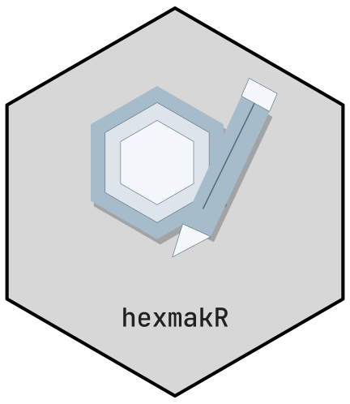

Editable logo projects
The current project API starts from a fresh name and frame:
library(hexmakR)
design <- logo_design("My project", shape = "square")
design <- hex_add_part(design, "rectangle", x = .5, y = .6,
width = .3, height = .2)
design <- hex_edit_layer(design, "part_0001", fill = "#45B59A")
design <- hex_reuse_part(design, "phenoscapR")
hex_export(design, "my-project.svg")
hex_save_design(design, "my-project.json")Use hex_layers() to inspect IDs, roles and geometry.
hex_duplicate_part() retains an edited part’s current
appearance; hex_remove_part() deletes an added part or
hides native geometry. JSON projects and generated R recipes retain
these edits. See vignette("cttir-library") for complete
examples.
hex_import_art(design, "figure.png") embeds a PNG/JPEG
figure as one part; hex_import_art(design, "drawing.svg")
imports supported shapes as separate vector parts. SVG curves become
vector polylines. Source files are no longer needed after import. Use
angle in hex_edit_layer() for rotation,
hex_label_layer() for short labels, and
hex_groups()/hex_group_layers() to organise
items. Projects preserve these settings and have a 20 MiB limit; uploads
have a 10 MiB limit. See ?hex_import_art for SVG feature
limits.
The functions below remain the classic ggplot-based API, including custom PNG/JPEG images, theme presets and font selection.
Classic sticker parameters
library(hexmakR)
hex_sticker(
name = "mypackage", # Package name (required)
subtitle = "subtitle", # Shown below name
url = "r-pkg.org", # Shown at bottom
icon = "atom", # Built-in icon name
icon_image = NULL, # Path to custom PNG/JPG (overrides icon)
icon_size = 1.0, # Size multiplier (0.3 – 2.5)
theme = "stats", # Theme name
mode = "dark", # "dark" or "light"
bg = NULL, # Override background (#RRGGBB)
accent = NULL, # Override accent color
text_color = NULL, # Override text color
border_color = NULL, # Override border color
sub_color = NULL, # Override subtitle/URL color
font_family = "mono", # Font shorthand or system font name
font_bold = TRUE,
font_italic = FALSE,
font_size = 12, # Base font size in pt
border_width = 2, # Border width in mm
inner_border = TRUE, # Draw inner accent ring
filename = NULL, # Auto-save if provided
width = 600, # Export width in pixels
dpi = 300
)The function returns a ggplot object, so you can chain additional ggplot2 layers:
library(ggplot2)
hex_sticker("mypackage") +
annotate("text", x = 0.5, y = 0.05,
label = "v0.1.0", color = "#64748B", size = 2.5)Batch generation
Generate stickers for an entire list of packages:
packages <- list(
list(name = "pkgA", icon = "atom", theme = "stats"),
list(name = "pkgB", icon = "dna", theme = "genomics"),
list(name = "pkgC", icon = "bar_chart", theme = "viz")
)
output_dir <- tempdir()
for (pkg in packages) {
hex_sticker(
name = pkg$name,
icon = pkg$icon,
theme = pkg$theme,
filename = file.path(output_dir, paste0(pkg$name, ".png"))
)
}Integration with usethis / pkgdown
The conventional location for a package logo is
man/figures/logo.png. Once placed there, both usethis and
pkgdown will automatically pick it up.
# Inside your package directory:
hex_sticker(
name = "mypackage",
subtitle = "Does something great",
url = "github.com/you/mypackage",
icon = "gear",
theme = "tech",
filename = "man/figures/logo.png"
)Then add to your README.md:
And to your _pkgdown.yml:
Saving to PNG and SVG
s <- hex_sticker("mypackage", theme = "tidy")
# PNG (transparent background)
save_hex(s, "logo.png", width = 600, dpi = 300)
# SVG (requires svglite)
save_hex_svg(s, "logo.svg", width = 2)All available themes
themes <- hexmakr_themes()
for (nm in names(themes)) {
cat(nm, "—", themes[[nm]]$label, "\n")
}